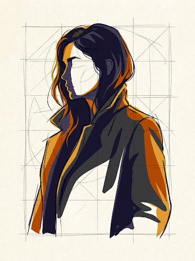

印版参数与输入
拓本源样
原片样本 (SOURCE)
走廊人像.jpg
1440 × 1920 · 1.4 MB
原图已加载就绪
add_photo_alternate
点击或拖入图片
支持 JPG, PNG, WebP 格式
* 小图会被自动放大 2 倍再描摹（轮廓更顺、色块更干净）
秒
基于本地 CPython 矢量核 · 不产生网络流量
走廊人像 · 矢量拓印作画中
已绘制 128,430 / 172,471 笔
|
74.4%
墨
化
真
迹

图版一 · 矢量轮廓分色着墨阶段
层级：4 / 7 · 贝塞尔闭合路径
00:42 / 01:30
1:1
生成历史
/ 本地保留的最近拓印 · 纯浏览器 IndexedDB 缓存
书斋静物
3 天前
142K 笔
古松枯枝图
上周
98K 笔
老街檐角拓片
2 周前
215K 笔
陶罐素描矢量化
1 个月前
83K 笔